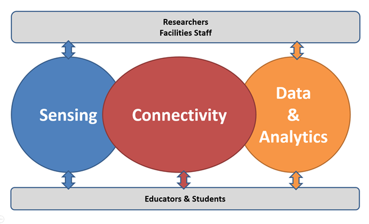
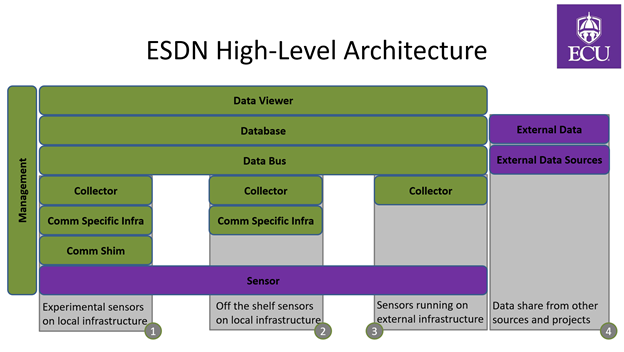

Project Summary
Environment instrumentation and the use of collected data to automate workflows creates countless opportunities to identify new scientific insights, to stimulate interdisciplinarity and to develop technological solutions to pressing issues. The deployment of sensors accounts for a significant part of IOT’s growth leading to a rapidly increase in the need for individuals with experience in the various aspects of IOT solutions, from sensing, to networking, to cloud and data management, to machine learning and artificial intelligence
Sensing infrastructures and solutions comprise of three main domains: Sensing – covering the technologies and methods of measuring certain variable, Connectivity – covering the technologies, protocols, and services responsible for managing the sensors and transporting data between sensors and the backend, Data & Analytics– covering the resources and tools responsible for storing, managing and analyzing the data.

Researchers, Educators, Communities have expertise, interest, and opportunities in one, maybe two of the domains at one time or in the context of a given project. For this reason, we are seeing significant resources wasted in the creation ad-hoc, sub-optimal, balkanized infrastructures that are not reusable, scalable, or sustainable. The Environmental Sensing Data Network (ESDN) aims to solve this problem
ESDN Mission: Create a platform enabling users to easily deploy and manage sensors, to collect data and build integrations with commercial and research tools and services. We want to enable users to focus on what they know and what they are interested in rather than recreating communications networks.
ESDN Platform Goals:
- Enable easy deployment of commercial and experimental sensors
- Enable easy and cost-effective setup of research, educational and operational sensing and work-flow automation environments
- Facilitate collaboration within ECU and with external organizations
- Provide a production level service
The ESDN platform is developed to support the technologies and tools that best fit each solution, with projects sharing various aspects of the infrastructure. The platform and the services provided are managed by the Technology Systems department in the College of Engineering and Technology.
Implementation
ESDN is built to support common research, education and solution use cases. The implementation goals of ESDN are:
- Manageable, Secure, Scalable, Sustainable, and Cost-Effective
- Modular to facilitate innovation and growth across architecture
- Mitigate vendor lock in and dependencies
- Use open-Source software and tools wherever possible
- Deliver production level services
To meet the implementation goals set for the project, we developed a high-level architecture which enable to project team to phase the solution development, to optimize the solution according to user feedback and technical developments, and finally to facilitate integrations.

ESDN supports sensing solutions:
- Fully supported by the ESDN communication network, with sensors without wireless interfaces
- Using the ESDN communication network, with sensors supporting standardized wireless communication technologies
- Using communications networks not supported by ESDN but with data collected by ESDN
- Integrating various external data sources
For example, a project can deploy sensors leveraging the ESDN communication shim to provide connectivity over LoRa to the backend. The ESDN developers work with users to integrate sensors with the communications shim, set up the data collection backend and the integration with external tools and data sources. All services provide are supported by the TSYS NOC.
We are building a community of researchers, educators, students and citizens who can launch projects, collaborate, share data, and contribute to the platform.
To learn more, launch a project or to simply be part of the ESDN community, Contact Us